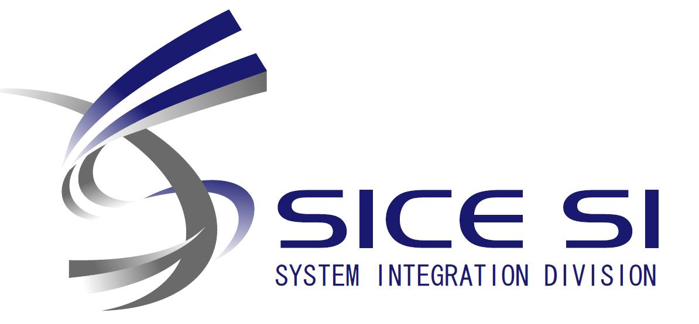

DARS 2026
The 18th International Symposium on Distributed Autonomous Robotic Systems
Date: October 26th-29th, 2026 | Venue: Ookayama-campus, Institute of Science Tokyo (Tokyo, Japan)
Announcements
-
NEW
Extension of Early-Bird Registration Deadline
The Early-bird registration deadline has been extended to September 10
August 31. Register Here » - CFP Extension of Abstract Deadline & Notification Date The abstract submission deadline for Late-Breaking Results & Demos has been extended to August 15. The notification date has also been moved to August 30.
- INFO Program Overview & Venue Details Available Check the overall schedule on the Program and access guides on the Venue.
- SPONSOR Call for Sponsorship and Exhibition Opportunities are available! Deadline: July 30 Details »
The International Symposium on Distributed Autonomous Robotic Systems (DARS) has been held biennially since its inception in 1992, maintaining its distinctive single-track format that fosters in-depth discussion and collaboration among all participants.
With the rapid growth of robotic technologies in society, industry, and services, distributed and autonomous robotic systems are becoming increasingly essential for building robust, reliable, and intelligent real-world applications.
DARS 2026 invites researchers from around the world to present, discuss, and demonstrate their latest advances in the theories, algorithms, architectures, and applications of distributed autonomous robotics. The symposium provides a stimulating forum to exchange ideas, identify challenges, and explore new frontiers in distributed robotic systems.
We invite all interested researchers and stakeholders to take part in DARS 2026. Papers are solicited in all areas of distributed autonomous robotic systems, including, but not limited to:
- Swarm robotic systems and design
- Modular robotics
- Mobile sensor networks
- Self-organizing and self-assembling robotic systems
- Human swarm interaction
- Hybrid symbiotic systems
- Multi-robot control and planning
- Multi-robot motion coordination
- Multi-robot learning and adaptation
- Distributed manipulation
- Distributed control and planning
- Distributed decision making
- Collective embodied intelligence
- Networking in multi-robot systems
- Localization and navigation in multi-robot systems
- Distributed cooperative perception
- Trustworthy and verifiable distributed systems
- Performance metrics for multi-robot systems
- Societal/economic/ethical/regulatory/educational considerations for distributed autonomous robotic systems
Organized by
General Chair: Daisuke Kurabayashi (Institute of Science Tokyo)
Program Chair: Takeshi Hatanaka (Institute of Science Tokyo)
Advisors: Alcherio Martinoli (EPFL), Hajime Asama (Waseda University)
In cooperation with
